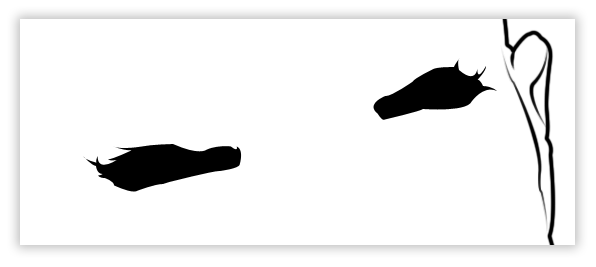

Dans ce tutoriel vous allez apprendre à faire un portrait sur Adobe Photoshop, dans un style Bande Dessinée ou plutôt Comics américains d'après une photo. Mais avant tout, je vous conseil de lire le très bon tutoriel de Carma001 "Maîtriser l'outil plume et les tracés". Cela vous permettra d'être beaucoup plus à l'aise avec l'outil principal de ce tutoriel, la Plume. Au début, utiliser l'outil Plume pourra vous paraître difficile, mais avec de l'entraînement vous pourrez arriver à des résultats surprenants.
Pour réaliser ce tutoriel vous pouvez prendre n'importe quelle photo, mais je vous conseille d'utiliser la même image que moi. Trouvée sur le site photo-libre.fr mettant à disposition (gratuitement) des images et photos libres de droits.
1. Ouvrez votre photo dans Photoshop. Dans la fenêtre des calques votre image se nomme "Arrière-plan". Nous allons débloquer le calque pour pouvoir le modifier et ainsi le renommer "photo de base". Pour cela, faites un double-clic sur le calque (A), une petite fenêtre s'ouvre, remplacez le nom "Arrière-plan" par "photo de base", puis faîtes OK(B). Cela a en même temps changé l'état du calque, il est donc devenu modifiable.
2. Créez un deuxième calque (A). Modifiez-le en faisant clic-droit(B) > Propriété du calque > Renommez-le "fond blanc" > OK.
3. Faites glisser le calque "fond blanc" en dessous du calque "photo de base". Pour cela, cliquez sur le calque et faites le descendre comme sur l'image ci-dessous. Puis prenez l'outil "pot de peinture" et remplissez le calque "fond blanc" de couleur blanche (#FFFFFF). Cela permettra de voir rapidement quel sera le rendu final.
4. Créez maintenant un dossier (A) que l'on renommera "visage" (pour le renommer, même technique que pour les calques). Puis créez un nouveau calque "contour visage" qui sera dans ce dossier (B).
Rien d'extraordinaire pour l'instant, mais vous pourrez travailler dans de bonnes conditions en étant organisé de la sorte. ;)
Dans cette partie vous allez enfin commencer à "dessiner" grâce à l'outil Plume.
1. Mais d'abord, sélectionnez l'outil Pinceau.
Faites un clic-droit sur votre surface de travail, choisissez une forme arrondie et changez la dimension à 4 pixels (voir zone en rouge sur l'image). Pour cette photo, 4 pixels sont suffisants, mais cela peut très bien changer en fonction de la résolution de votre image, tout dépend si vous voulez avoir des traits gros ou fins (pour les détails par exemple). La modification de l'outil Pinceau influe directement sur l'outil Plume, nous verrons ça dans un instant.
2. Sélectionnez le calque "contour visage", puis l'outil Plume. Zoomez sur l'image au niveau du haut de l'oreille (voir image ci-dessous). Faites un premier clic gauche à la base de l'intersection entre l'oreille et le crâne (A). Puis, un deuxième clic (B), tout en maintenant celui-ci, modifiez la courbe de la Plume pour se juxtaposer à celle du crâne .
3. Cliquez sur le petit carré au milieu de la droite ou plus communément appelé "ancre"(B) (voir image du dessus). Puis tracez une deuxième ligne, avec la Plume, un peu plus haut sur le crâne (voir image ci-dessous).
Si vous avez compris cette étape, la suite et un jeu d'enfant. Il suffit de faire le tour du crâne jusqu'au menton, n'hésitez pas à faire de nombreuses ancres et à zoomer pour faire les contours plus difficiles, comme les oreilles par exemple. Ci-dessous, un exemple de tracé pour l'oreille.
4. Lorsque vous avez terminé un tracé, sélectionnez la couleur noir et faites un clic droit (n'importe où sur la surface de travail), puis "contour du tracé" (A). Une fenêtre apparaît alors, vérifiez que l'outil soit bien le pinceau (B) et que la case "Simuler la pression" soit décochée (C), puis faites OK. Le tracé de la Plume s'est transformé en trait de Pinceau de 4 pixels.
Pour apercevoir le rendu sur un fond blanc, décochez le petit œil à gauche du calque "photo de base".
:euh: Ce n'est que le début, je vous rassure.
5. Re-cochez le calque "photo de base" et créez un nouveau calque que vous nommerez "côté gauche". Faites le glisser dans le dossier "visage". Utilisez exactement la même technique pour faire le contour de l'oreille, jusqu'à la base du cou.
1. Créez un dossier "intérieur visage", puis un nouveau calque "oreille gauche".
2. Tracez maintenant l'intérieur de l'oreille comme sur l'image ci-dessous. Puis clic droit > "Contour du tracé" > cocher la case "Simuler la pression". Cela donnera un rendu de trait plus fin au extrémités.
En suivant les traits principaux de l'oreille, vous devriez obtenir un résultat similaire. Faites ensuite la deuxième oreille.
3. Passons maintenant aux sourcils. Même chose que pour le visage, faites les contours jusqu'à revenir à votre point de départ, cliquez ensuite sur le premier point d'ancrage pour fermer votre tracé. N'hésitez pas à faire les petits poils, c'est peut-être long et laborieux, mais c'est la meilleur façon d'obtenir un résultat réaliste.
4. Nous allons maintenant remplir cette zone. Faites un clic droit sur votre zone de travail > "Fond du tracé" > vérifiez que la case "Lissé" soit cochée et que le "Rayon" soit à 0 pixel > OK.
Après avoir fait les deux sourcils, vous devriez obtenir un résultat similaire.

5. Passons à l'œil (gauche). N'oubliez pas de faire de nouveaux calques pour chaque partie, par exemple "œil gauche", "œil droit", "sourcil gauche", etc. Dans l'exemple (voir image ci-dessous) nous partons d'un ride du côté gauche de l'œil, puis par la paupière et pour terminer par un autre ride en direction du bas front.
6. Pour la limite entre la paupière inférieur et l'œil, décocher "Simulation de la pression" pour donner un meilleur rendu (A). Suivez ensuite l'iris de l'œil (B), et comme pour les sourcils, remplissez la sélection avec "Fond du tracé". Faites de même pour l'œil droit.
7. Pour le nez, cochez la "Simulation de pression" et suivez le tracé ci-dessous. "Contour tracé" > OK.
8. Passons à la moustache. N'hésitez pas à faire les petits poils comme pour les sourcils. La moustache s'arrêtant au nez, retracé par dessus comme sur l'image ci-dessous (A).
9. Après avoir tracé la bouche et le bas menton vous devriez avoir ce résultat.
10. Dernière étape : les détails. Tracez les rides les plus visibles autour des yeux, entre les sourcils, le front ,les côtés du visage (joues, tempes) et sans oublier la petite veine ;) Changez la grosseur du Pinceau à 3 pixels et utilisez la "Simulation de pression". Inspirez vous de l'image ci-dessous pour voir en gros quels sont les rides principaux.
Si vous avez suivie les principales étapes vous devriez arriver à un résultat proche de celui-ci (voir en bas).
Merci d'avoir lu ce tutoriel jusqu'au bout, entraînez-vous et envoyez-moi vos réalisations. ;)

{kind=link}